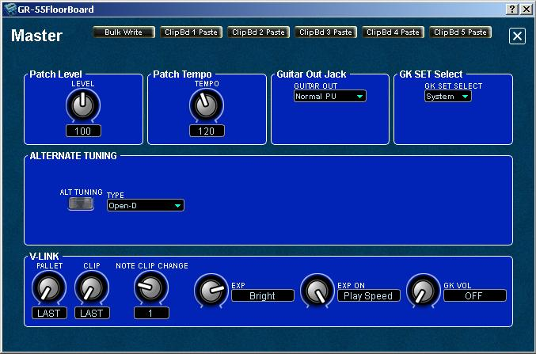

GR-55
FloorBoard Editor
Help
IndexEditing MASTER Settings
NOTE:
The following sections describe "PATCH level" parameters affecting the current GR-55 patch.
NOTE:
When you make a change to MASTER parameters in the editor or in the
GR-55, changes are not saved automatically to the GR-55 and must be written
before they are in effect.
You can access the above MASTER Settings by clicking the MASTER button at the top of the editor's main panel:

The MASTER panel opens. MASTER Settings

The MASTER editor panel allows you to edit the following functions:
- Patch Level - the overall volume of the patch, including COSM and PCM 1 and PCM2.
- Patch Tempo - specifies the tempo for tempo-synchronized effects.
If SYSTEM–MIDI/USB–GENERAL–MIDI SYNC (owner's manual p. 79) is “ON,” the tempo is determined by
MIDI clock from an external device. - Guitar
Out Jack - you can specify what signals (OFF/Normal PU/Modeling/Both)
are sent to the Guitar Output jack on the back of the GR-55.
- GK
SET Select - you can specify which GK settings (1-10) to use for the
selected patch. If you switch guitar or bass for different songs, you
can use a patch for each song that includes the right instrument
controller.
- Alternate Tuning - you
can select from popular alternate tunings and a user specified tuning.
Note that alternate tunings are not available in 12-string mode and
that the normal guitar pickup tunings are not affected.
- V-Link - you can control connected Roland V-Link equipment parameters.
Changed Master parameters are not saved automatically!
- Click the editor's red WRITE button to save changes made on this panel to the GR-55.
Bulk Write the Current Setting to a Range of Patches
You can use the editor's Bulk Patch Modifier feature to write the
current setting as seen on the open panel to a selectable
range of patches or to all patches if you wish to use the settings globally.
WARNING!!: Existing Patch data will be overwritten.
- Click the Bulk Write button to open the Bulk Patch Modifier.
- Select the starting and the finishing user patch numbers.
- Clcik Start to save the current settings to the selected patches, or click Cancel if you decide otherwise.